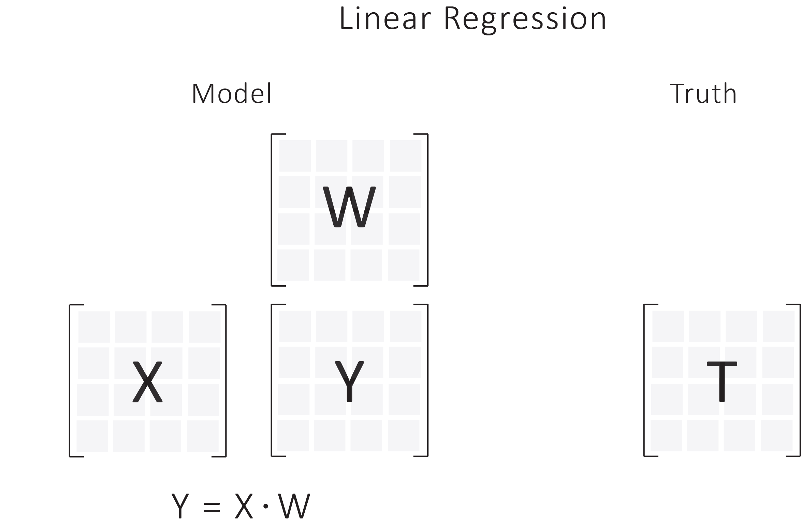
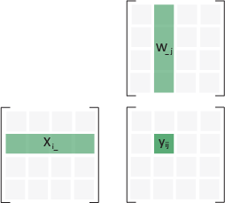
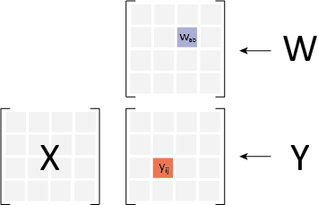
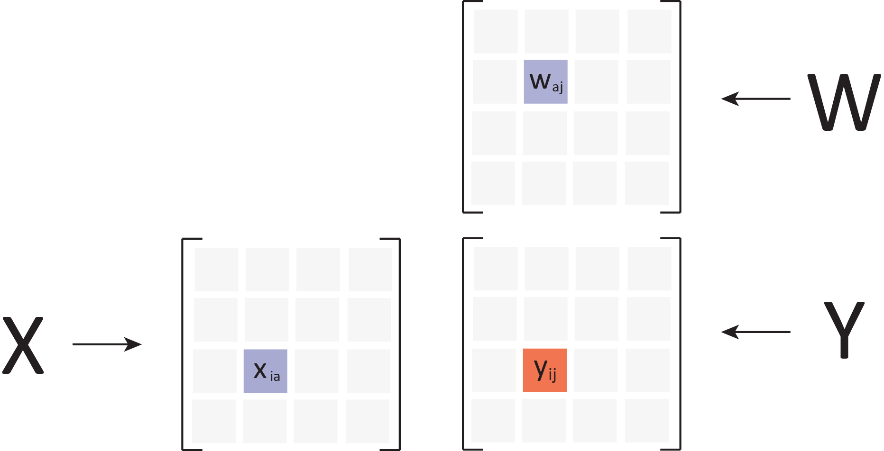
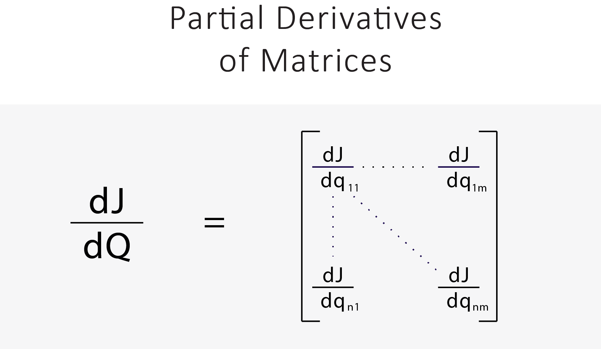
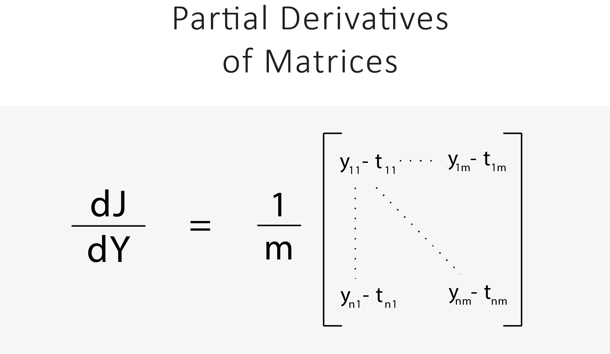
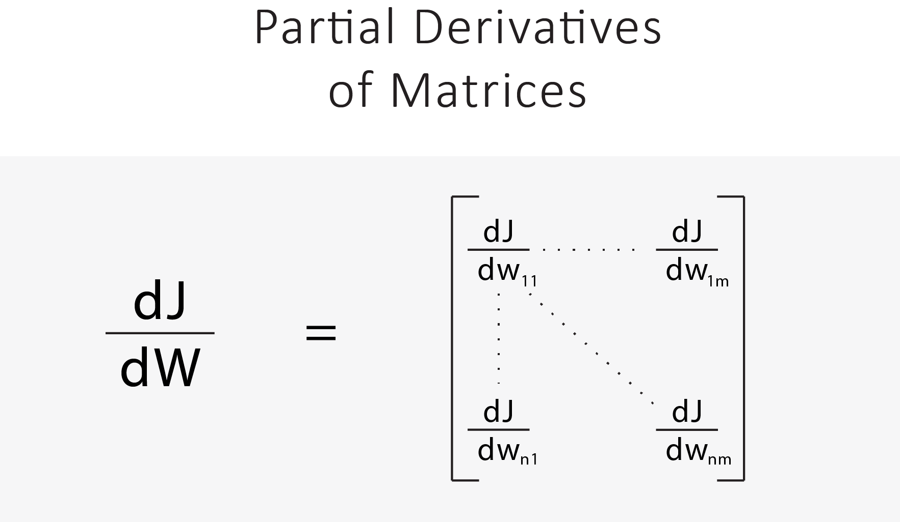

When I started college as a bright-eyed and bushy-tailed freshman, I remember walking into 5 different freshman math classes. All of them had the exact same lesson: Vectors. I was a little annoyed that my time was totally being wasted. Yes, I have seen vectors before. Yes, I know how to dot them together. Yes, I know they have magnitude and direction. A surprise was saved for the end of the lecture. Any guesses? Yup, matrices. And they wonder why we just show up for exams.
It is going to be different this time
I'm going to assume that you know what vectors are. I'm going to assume that you have been intimately close with a couple of matrices. I'm going to assume that you can take a partial derivative. Let's not turn this into a snoozefest.
Background
I want you to assume for the sake of this blog, that you are trapped on an island. The rest of mankind has turned into zombies, and you have to recreate all of machine learning from scratch. Let's start with linear regression, and let's write the the algorithm using gradient descent as our update rule. Note that gradient descent is the backbone for Logistic Regression, the Perceptron, and Neural Networks. So if you can't make it work with Linear Regressions, then you are in some real trouble when things get more complicated.
Let's start with an example dataset. Here are some of the rows in the famous Boston House Value dataset.
Data
| Inputs | Output | ||||||||||||
|---|---|---|---|---|---|---|---|---|---|---|---|---|---|
| CRIM | ZN | INDUS | CHAS | NOX | RM | AGE | DIS | RAD | TAX | PTRATIO | B | LSTAT | MEDV |
| 0.00632 | 18 | 2.31 | 0 | 0.538 | 6.575 | 65.2 | 4.0900 | 1 | 296 | 15.3 | 396.90 | 4.98 | 24.0 |
| 0.02731 | 0 | 7.07 | 0 | 0.469 | 6.421 | 78.9 | 4.9671 | 2 | 242 | 17.8 | 396.90 | 9.14 | 21.6 |
| 0.02729 | 0 | 7.07 | 0 | 0.469 | 7.185 | 61.1 | 4.9671 | 2 | 242 | 17.8 | 392.83 | 4.03 | 34.7 |
| 0.03237 | 0 | 2.18 | 0 | 0.458 | 6.998 | 45.8 | 6.0622 | 3 | 222 | 18.7 | 394.63 | 2.94 | 33.4 |
| 0.06905 | 0 | 2.18 | 0 | 0.458 | 7.147 | 54.2 | 6.0622 | 3 | 222 | 18.7 | 396.90 | 5.33 | 36.2 |
In this dataset, we are trying to predict the median value of a house ("MEDV") from other attributes of the house ("AGE", etc..). But forget for a moment the precise meaning of all of the columns. Let's look at the bigger picture here. As we can see this dataset has 13 columns of inputs. Let's put them in a matrix and call it $X$. And then we have some output column "MEDV". Let's throw that in a matrix $T$ (for 'da Truth). Now, in this example we only have one output that we are predicting, but in general, we can have many more. And we can predict them all together (you'll see how).
Linear Models
In linear models, we are looking to predict our output ("MEDV" in this case), as a linear combination of our inputs, such that
$$w_1*CRIM + ... w_{13}*LSTAT = Y$$
$Y$ is close to $T$. It's easy to see that $Y$ is the output of our model. We can imagine taking our weights and putting them in a separate weight matrix $W$, such that the dot-product of $X$, and $W$ is $Y$. Pictorially, this looks like
Note that when I multiply two matrices together, I picture the second matrix ($W$ in this case) up and to the right, because then the dot-product has a nice visual representation. It looks like this
$$y_{ij} = X_{i\_} \cdot W_{\_j} = \sum_{k} x_{ik}*w_{kj}$$
Here is a codepen, that illustrates that calculation.
For those of you uncomfortable with this alternate way of saying the same thing, recall that the dot-product computes exactly the same quantity in $Y$ that our linear model is trying to create. Click this link for some more discussion on matrix multiplication.
The whole game of linear regression is finding a good matrix W
So, we know that $X \cdot W = Y$, and let's also say that $m$ is equal to the number of rows in $X$. We want to find a matrix $W$, such that we have a "good" model ie... $Y$ looks a lot like $T$.
Error Function
But how do we define "good"? Given a value $y_{ij}$, out of our $Y$ matrix, and the corresponding value $t_{ij}$ out of the $T$ matrix, we have to decide what is the "error" between them. Our favorite and most used error function is just the "Squared Error" function which is
$$SE(y,t) = \dfrac{1}{2}(y-t)^2$$
Now we can define our total mean error between our two matrices as $J$, namely
$$J = \dfrac{1}{m} \sum_{i,j} SE(y_{ij}, t_{ij}) = \dfrac{1}{2m} \sum_{i,j} (y_{ij} - t_{ij})^{2} $$
The name of the game is to minimize the total error
We essentially minimize the total error by using calculus (namely partial derivatives) to "walk down" our error function.
Basically, we take our partial derivative in each variable ($w_{ij}$) and move it up or down depending on which direction makes our error slightly smaller. Another name for this common sense approach is gradient descent.
Questions
- Why do we divide the total error by $m$? Isn't minimizing the average error (with $m$) the same thing as minimizing our error without $m$?
Yes it is. The choice of the error function (and the constants in front) are there to make our lives easier after we take the derivative. Once we take the derivative with respect to a given value, $w_{ab}$, in $W$, then we add that value to derivative value to $w_{ab}$. Now if we don't divide by $m$, and we take the derivative, our updated $w_{ab}$ will take a ginormous step in the new direction (as the error now depends on how many total datapoints there are). So we divide by $m$ to normalize the size of our update steps, and to make them independent of the number of datapoints in $Y$ and $T$.
- Why do we divide the Squared Error by 2?
Same as above. We are trying to make our lives easier after the derivative. Once we take the derivative of the Squared Error with respect to $y$, we pull down the power of $2$, and it cancels with the constant.
Pop Quiz
- If you wanted to create an error function that minimized the absolute difference between your output and the "truth", what would it look like?
Derivative
So let's randomly chuck some values, $w_{ab}$, into $W$, and let's call 'em "weights" from now on. Then let's compute the derivative of J with respect to some random weight, $w_{ab}$. Then let's move our weight in the opposite of what our error gradient returns, because we want to move down in error.
Taking the derivative of our error expression above, we see that
$$J = \dfrac{1}{2m} \sum_{i,j} (y_{ij} - t_{ij})^{2} $$
$$ \dfrac{dJ}{dw_{ab}} = \dfrac{1}{2m} \sum_{i,j} \dfrac{dJ}{dy_{ij}} * \dfrac{dy_{ij}}{dw_{ab}} = (\dfrac{1}{m} \sum_{i,j} (y_{ij} - t_{ij}) * \dfrac{dy_{ij}}{dw_{ab}}) $$
To give some intuition on what we are trying to calculate in that second term, consider the following picture.
Picture 1
Given that $X \cdot W = Y$, consider a random element $y_{ij}$, and some equally random element of the weight matrix $w_{ab}$. How is $y_{ij}$ changed if we vary $w_{ab}$? It's pretty easy to see that changing $w_{ab}$ has no effect on $y_{ij}$, if $b \neq j$, because they are not in the same column.
And if they are in the same column, we see that the derivative of
$$\dfrac{dy_{ij}}{dw_{aj}} = x_{ia}$$
Consider the following image. And the fact that
$$y_{ij} = X_{i\_} \cdot W_{\_j} = \sum_{k} x_{ik}*w_{kj}$$
Picture 2
So, we see that
$$ \dfrac{dJ}{dw_{ab}} = \dfrac{1}{2m} \sum_{i,j} \dfrac{dJ}{dy_{ij}} * \dfrac{dy_{ij}}{dw_{ab}} = (\dfrac{1}{m} \sum_{i,j} (y_{ij} - t_{ij})x_{ia}) $$
if $j=b$, otherwise it is $0$.
Now because $j=b$, we can simplify the expression above to
$$ \dfrac{dJ}{dw_{ab}} = (\dfrac{1}{m} \sum_{i} (y_{ib} - t_{ib})x_{ia}) $$
So there you go! That is the derivative with respect to a single element $w_{ab}$. Don't worry, we will clean it up (cause it is not that pretty) as soon as we take a ...
Quick Aside
It's pretty easy to understand what I mean when I say $\dfrac{dJ}{dw_{ab}}$. In words, I am saying "How much does J change if we wiggle $w_{ab}$"? But what about the expression $\dfrac{dJ}{dQ}$, where $Q$ is some arbitrary matrix?
To me this represents a matrix of size $Q$, where the element $q_{ab}$ is equal to $\dfrac{dJ}{dq_{ab}}$. In words, this quantity is a matrix that stores the partial derivatives in their correct place.
As a picture it looks like this
This quantity is super useful. If you understand this explanation, you will save yourself a ton of time, and gain intuition about what you are actually calculating with almost all gradient descent algorithms.
As a concrete example, let's compute $\dfrac{dJ}{dY}$. We see that it is
The main goal of all of this is to calculate $\dfrac{dJ}{dW}$. That is the matrix of partials, that we can add to our original $W$ (making sure to multiply by negative 1, to walk down in error) to get our next estimate of $W$.
It looks like this
And We're Back
So we figured out that
$$ \dfrac{dJ}{dw_{ab}} = (\dfrac{1}{m} \sum_{i} (y_{ib} - t_{ib})x_{ia}) $$
Hmmmmm.... So how else can we understand this quantity? Well, let's think about the matrix which is $\dfrac{dJ}{dY}$.
Every element of this matrix is $\dfrac{1}{m} y_{ij} - t_{ij}$. I like to think of this matrix as the first stop as we distribute the error to our weights. It contains all of the partials in $y_{ij}$. So then what is this quantity above then?
$$ \dfrac{dJ}{dw_{ab}} = (\dfrac{1}{m} \sum_{i} (y_{ib} - t_{ib})x_{ia}) $$
Well lets choose a random element, $w_{23}$, and try to visualize what we are summing up. This illustration is super useful. If you stare at that visual, take a hard swig of brandy, and tilt your head to the side, you might realize how to dot these two columns together.
We really want to rotate (transpose) that column in X, and then dot that with our column in $\dfrac{dJ}{dY}$. Once you make that connection, it is not hard to rewrite the sum above as
$$\dfrac{dJ}{dw_{ab}} = \dfrac{1}{m}X_{\_a}^{T} \cdot (Y_{\_b}-T_{\_b})$$
If I went a little too fast here, feel free to change the element in the codepen visual to build up an intuition about what you are doing.
From that expression, we can now combine these results and create the matrix we want, while also cleaning up the expression. It now becomes.
$$\dfrac{dJ}{dW} = \dfrac{1}{m}X^{T} \cdot (Y-T)$$
Wow! Well isn't that perdy! Every element of this matrix, $w_{ab}$, contains the exact value of $\dfrac{dJ}{dw_{ab}}$.
If you didn't see this simplification, don't fret. I didn't see it either, until I filled up about 10 pages with these partial derivative / matrix calculations. This is me saving you some time.
Interesting Thoughts
We just created the matrix of partials for $W$, namely
$$\dfrac{dJ}{dW} = \dfrac{1}{m}X^{T} \cdot (Y-T)$$
This can also be written as
$$\dfrac{dJ}{dW} = X^{T} \cdot \dfrac{dJ}{dY}$$
In words, we are saying that if we have the matrix of partials stored in $Y$ (namely $\dfrac{dJ}{dY}$), we can walk this quantity north to get the matrix of partials $\dfrac{dJ}{dW}$.
I call this operation the Partial North, and you will see it crop up again, as you derive logistic classification, and neural nets.
Derivative Complete
Given what we just learned, we now know that the matrix we need to add to our original weight matrix is
$$W_{update} = -\alpha \dfrac{dJ}{dW} = -\dfrac{\alpha}{m}X^{T}\cdot(Y-T)$$
$\alpha$ is a small constant called the "learning rate" which we need so that we don't take ginormous steps from one matrix to another. Remember our partial derivative is a local approximation, and so we should be careful to take smallish steps so as to avoid overshooting the minima that we are looking for.
I'm going to admit something right now.
There is a much easier way to do this calculation, but it doesn't make too much sense unless you slog through this. I'm sorry. But if you derive a couple rules, this derivative stuff through matrices becomes a lot simpler. I talk more about the details of this stuff as we head into Neural Net territory.
Foreshadowing
You did something pretty awesome today. You were able to write down an expression for $\dfrac{dJ}{dW}$ in terms of X,W, and $\dfrac{dJ}{dY}$.
But what if we wanted to compute the derivative $\dfrac{dJ}{dX}$? More importantly, why would I ask you about a quantity like this? The keys to heaven, backpropagation, and eternal glory lie in the understanding of these two expressions, but it's no fun if I tell you everything...
Code
Well, that was fun! But every problem lives two lives. The first life is when you solve it, the second is when you teach a computer to solve it.
What I cannot create, I do not understand. -- Richard Feynmann
So in the spirit of Richard Feynmann, it's time to create your Linear Regression class. Next week we compare notes.
In the style of the scikit-learn libraries, I am going to write a class called LinearRegression, and have a fit method.
The basic concept will look like this
from numpy import dot, transpose
class LinearRegression:
# Constructor
def __init__(self, error_func=SquaredError, lr=0.1, n_iter = 1000):
...
# Feeds our input through our model
def predict(self, X):
...
# Given input, and truth, updates weights, once
def update(self, X, T):
...
# Updates weights as many times as needed
def fit(self, X, T):
...
# This is how I plan on using it
L = LinearRegression()
L.fit(X,T)
L.predict(val)
Take a crack at it, and if you are stuck, feel free to grab a few hints from my github. Happy coding. Next week we hash out the details.